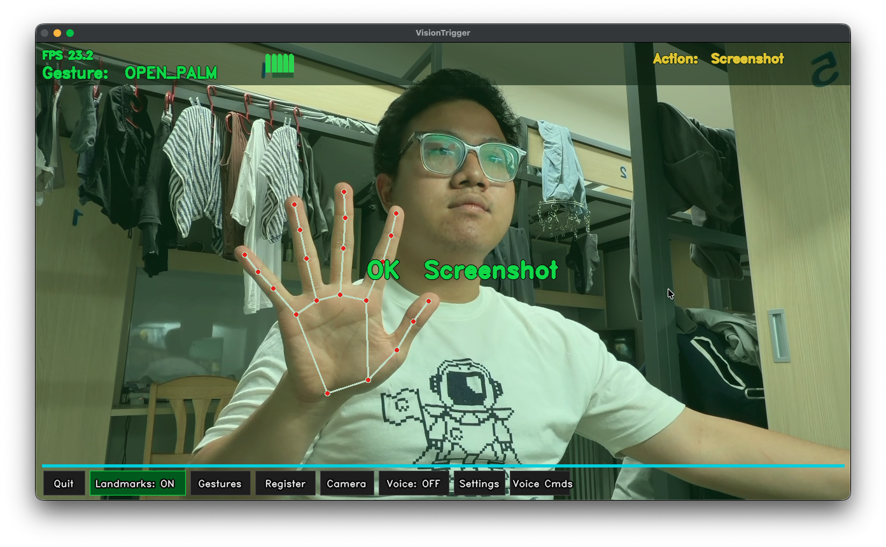
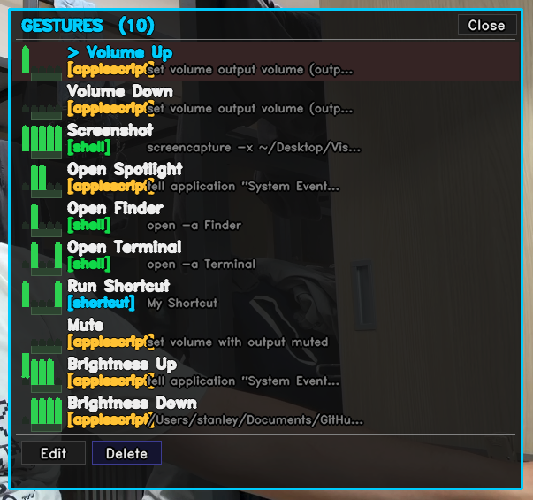
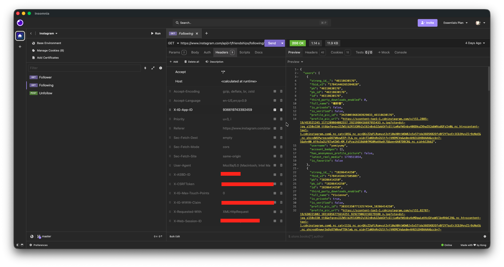

The thesis: four real artifacts at different points on the AI-autonomy spectrum — and watching where the line lives between what AI can do alone and what still needs a human.
Control macOS with hand gestures and voice — fully vibe-coded with Claude Code & GitHub Copilot.
Hand-tracked Fruit Ninja clone — solo + 2v2 multiplayer. Extension of VisionTrigger's hand-tracking pipeline.
Instagram followback checker — required manual reverse engineering of Instagram's private API.
Entire slide deck designed by AI — given only the codebases as input. Delivered in under 3 minutes.
| Tool | Cost · 是否付費 | Purpose · 用途 | How I Used It · 如何使用 |
|---|---|---|---|
| Claude Code (Anthropic) | PAID · Claude Max ~$200/mo | Full-stack code generation, architecture, refactoring | CLI agent in terminal — prompted in plain English; AI read files, wrote code iteratively |
| GitHub Copilot | FREE · Student license | Inline code autocomplete during typing | VS Code extension — tab to accept inline suggestions while editing |
| MediaPipe HandLandmarker (Google) | FREE · Open-source | 21-joint hand tracking — shared by VisionTrigger & Fruit Ninja | Python mediapipe package; CPU inference; up to 4 hands tracked for multiplayer |
| Pygame | FREE · Open-source | Fruit Ninja game loop, fruit/bomb rendering, juice splat layer | pip install pygame; 60 FPS draw loop + SRCALPHA surface caching |
| Faster-Whisper | FREE · Open-source | AI model — real-time speech-to-text for VisionTrigger | Model auto-downloaded, runs 100% offline; no cloud calls |
| Postman | FREE · Personal plan | API testing & reverse engineering Instagram's private endpoints | Copied browser DevTools requests, replayed & mutated to discover endpoints |
| OpenCV · React+Vite · Python | FREE · Open-source | Camera capture / web frontend / runtime | Standard package managers (pip, npm); used as documented |
Disclosure: only Claude Code is paid. Copilot is free under my student account; everything else is open-source. No tool's output was hidden or attributed to me.
config.yaml

(thumb, index, middle, ring, pinky) bool tuple{placeholder} regex capture + substitutionClaude Code — handled full-stack: algorithms, UI drawing, config I/O, threading, refactoring.
GitHub Copilot — inline suggestions during active coding sessions.
The motivation: VisionTrigger proved hands can replace the mouse. Fruit Ninja asked — can they also replace the controller, and bring friends into the same physical space instead of static, solo gameplay?
Simple set difference — the hard part was getting the data, not computing the result. That's the next slide.
/api/v1/friendships/followers/x-ig-app-id: 936619743392459), auth cookies, and pagination parametersThis is where human judgment became essential — not just writing code, but understanding a system that wasn't designed to be understood from the outside.
friendships to find the real API calls being made by the Instagram web app.
next_max_id), and design retry + rate-limit logic around the discovered endpoints.

The same AI tool that built the projects also presented them — this deck is itself a demonstration of the tool's capability.
| Task | VisionTrigger | Fruit Ninja | iTrace | This PPT |
|---|---|---|---|---|
| Code / markup written | AI ✓ | AI ✓ | AI ✓ | AI ✓ |
| Architecture / structure | AI ✓ | AI ✓ | AI ✓ | AI ✓ |
| Content sourcing | Human intent | Human intent | Human intent | Read codebase ✓ |
| Undocumented API / research | Not needed | Not needed | Manual reverse-eng. ✗ | Not needed |
| Design & visual layout | AI ✓ | AI ✓ | AI ✓ | AI ✓ |
| Time to deliver | Days | Days | Days | < 3 minutes |
VisionTrigger + Fruit Ninja were both vibe-coded — and Fruit Ninja reused VisionTrigger's pipeline, so AI handled the “extend an existing system” loop too. Complex software shipped in days.
iTrace required observing live network traffic and validating an undocumented API — AI alone couldn't get there. The line lives at “things AI has never seen.”
This deck was AI-generated in < 3 minutes — but a human still reviewed every slide, corrected details, and approved the final output.
Whether AI does 20% or 100%, a human must verify the result is correct, honest, and actually says what you meant to say.